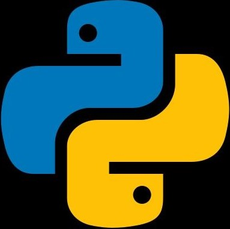
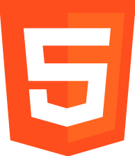
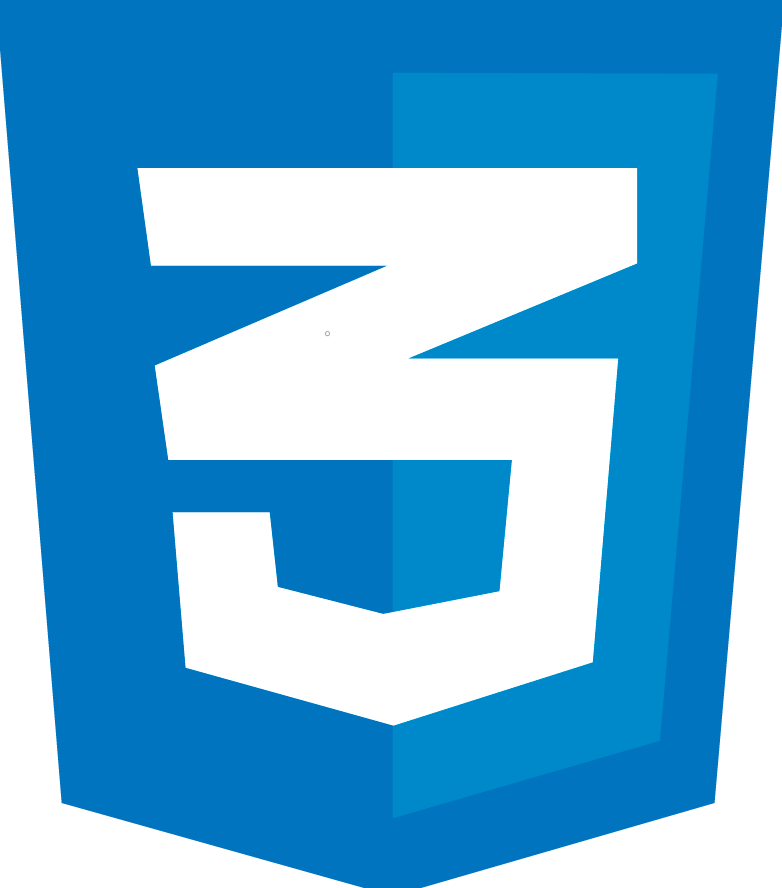
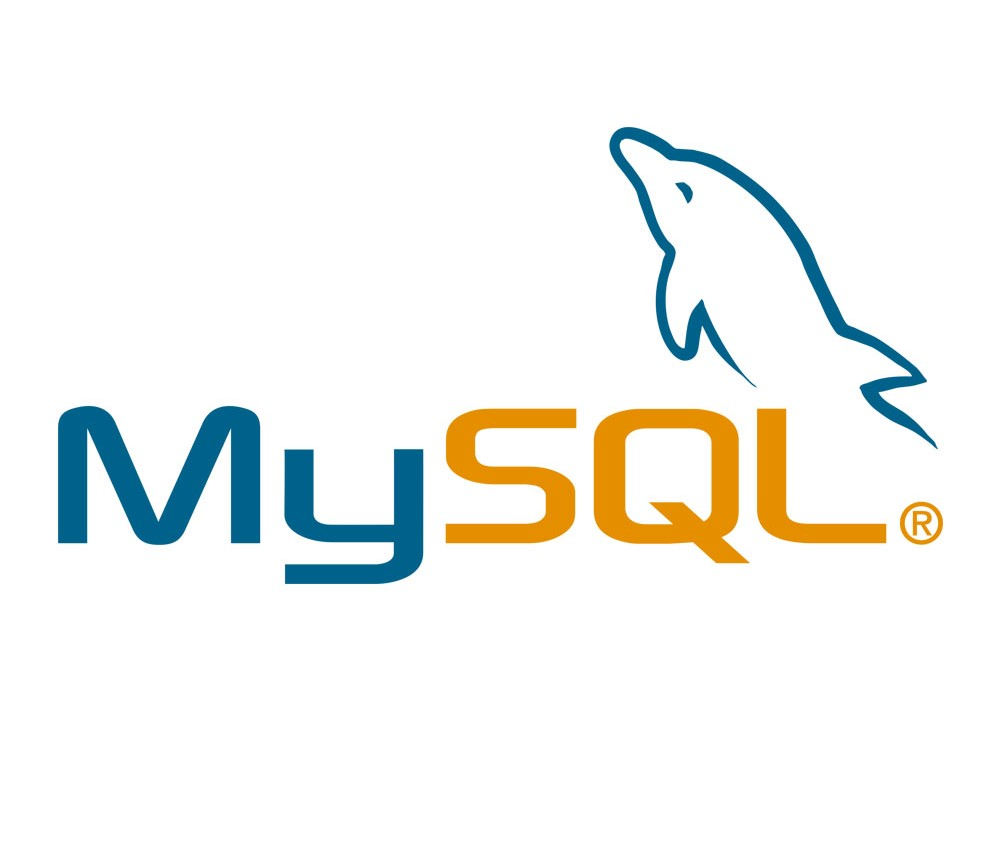

Python
Flask

Html:5

CSS3

MySQL
Sql

Git
Olá, sou Erick Enedeno Nunes, tenho 19 anos e sou um apaixonado desenvolvedor web, sempre em busca de inovação e aprendizado.
Adoro desenhar e aprender coisas novas no meu tempo livre, além de ser um grande amante de historias, jogos e da Inteligência Artificial.
Com 17 anos de idade, mergulhei de cabeça no mundo da programação e venho trilhando um caminho incrível até aqui.
Minha jornada na programação é caracterizada por um conjunto de habilidades e conhecimentos que continuam a
crescer. Atualmente, concentro minha atenção nas seguintes áreas:
- Linguagem de Programação: Python é a minha linguagem de eleição. Sua simplicidade e versatilidade me
permitem desenvolver soluções incríveis em diversas aplicações. Além disso, estou sempre buscando aprimorar
minhas habilidades em Python para criar código mais limpo e eficiente.
- Web Development: Como um aspirante a desenvolvedor web, minha paixão reside na criação de sites e aplicações
da web. Compreendo a importância do HTML5 e do CSS3
no desenvolvimento web e posso criar páginas web atraentes e responsivas.
- Banco de Dados: Trabalhar com bancos de dados é essencial na construção de aplicações web robustas. Tenho
experiência em MySQL e sei como projetar e gerenciar bancos de dados eficientes para aplicações web.
- Framework Web: Estou familiarizado com o Flask um microframework em Python que me permite criar aplicações
web de maneira eficiente e escalável. Utilizando o Flask, tenho explorado a construção de aplicativos da web e
aprimorado minhas habilidades nessa área.
Este portfolio digital é uma expressão do meu constante aprendizado e experimentação. Aqui, você encontrará exemplos dos meus projetos pessoais e conquistas na programação. Estou sempre em busca de novos desafios e oportunidades para aprimorar minhas habilidades, por isso, fique à vontade para explorar meus projetos e entrar em contato comigo por meio das redes sociais.